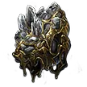
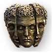
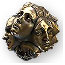
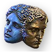
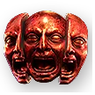
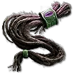
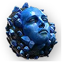

🧵 คราฟสร้อย (Amulet) +4 / +5 / +6 to Level of all Skills
หมายเหตุ: นี่คือการ "เรียบเรียงใหม่" จากคลิป (เสียงพิมพ์อัตโนมัติเพี้ยนเยอะ) — ผมแปลงศัพท์เพี้ยนเป็นชื่อจริงที่ค้นใน poe2db ได้ พร้อมไอคอน orb จากฐานข้อมูล และเสริมคำอธิบาย/เตือนตรงจุดที่คลิปพูดไม่ชัด · ▶ คลิปต้นฉบับ
🎯 เราจะทำสร้อยอะไร
เป้าหมายคือสร้อย rare ที่ การันตี 4 บรรทัดสำคัญ ได้แน่นอน ส่วนอีก 2 บรรทัดเป็น "ของแถม" (กันธาตุ / คริ / Cast Speed) ที่บังคับทิศทางด้วย Catalyst ได้แต่ไม่ 100%:
- +X to Level of all (…) Skills — ตัวเอก ดันได้ถึง +6 (สายไหนก็ได้: Spell / Attack / Projectile / Minion ฯลฯ หลักการเดียวกัน)
- + Spirit — ค่า Spirit ไว้จองออร่า/บัฟ (tier 1 = 50)
- increased Energy Shield — %ES รวม (คลิปเรียก "global")
- increased Energy Shield from Equipped Body Armour — มอดพิเศษจาก Desecration (ดู Well of Souls) — เพิ่ม ES เฉพาะก้อนที่มาจากเสื้อเกราะ
มอด +Level all Skills หาได้สูงสุดแค่ +3 ตามปกติ → เรา "Fracture" (ล็อกถาวร) บรรทัด +3 นี้ไว้ ก่อน แล้วค่อยคราฟบรรทัดอื่นรอบ ๆ มันโดยไม่ทำมันหลุด · จากนั้นดันเลขให้ทะลุ +3 ด้วย Catalyst (quality) → +4 และ การ Corrupt → +5 / +6
🔤 ศัพท์เพี้ยนในคลิป → ชื่อจริง
คลิปใช้เสียงพากย์ + ซับเพี้ยน ตารางนี้ช่วยถอดรหัสให้ค้นต่อใน poe2db ได้
| คลิปพูดว่า | ชื่อจริง (ค้น poe2db ด้วยคำนี้) | คืออะไร |
|---|---|---|
| "กระดูกไก่" | Jawbone / Desecration | ของสาย Desecrate ใช้ที่ Well of Souls — เติม mod แบบ "คว่ำหน้า" (ยังไม่เห็นว่าได้อะไร) |
| "หน้าขาว", "anum", "อนัม" | Orb of Annulment | ลบ mod แบบสุ่ม 1 ตัว (ลบบรรทัดที่ Fracture ไม่ได้) |
| "เคออส", "เคos" | Chaos Orb | ลบ mod สุ่ม 1 + เติมใหม่สุ่ม 1 = ใช้ "หมุน" หา mod |
| "device off", "ดีไวน์" | Divine Orb | สุ่มค่าตัวเลขในวงเล็บใหม่ (ดันเลขให้สุด) |
| "Facturing", "แฟคเจอร์" | Fracturing Orb | ล็อก (Fracture) mod สุ่ม 1 ตัวถาวร — กลายเป็นสีเหลือง ลบไม่ได้ |
| "the beast / breach / Beach" | Essence (Greater / Perfect) | การันตีให้ขึ้น mod ชนิดที่ต้องการ — ชื่อเฉพาะฟังไม่ชัด ดูหมายเหตุด้านล่าง |
| "Catalyst River / Cast" | Catalyst | เพิ่ม quality ของสร้อย/แหวน → ขยายค่ามอดบางกลุ่ม (Attack / Caster / Defence) |
| "Hincola / ฮิเนโครา" | Hinekora's Lock | "ดูดวงล่วงหน้า" — เห็นผลของ currency ตัวถัดไปก่อนกดจริง |
| "Well of Soul", "Echo" | Well of Souls (Desecration) | แท่นเปิด/เลือก mod ที่ Desecrate (กระดูก) ใส่ไว้แบบคว่ำหน้า |
| "Omen only Prefix / Suffix" | Omen of Sinistral / Dextral … | Omen คุมให้ currency ทำเฉพาะ prefix (Sinistral) หรือ suffix (Dextral) |
🗂️ Currency / Orb หลักที่ใช้ (ไอคอนจาก poe2db)

ล็อก mod ถาวรFracturing Orb
หมุน modChaos Orb
เติม modExalted Orb
magic→rareRegal Orb สุ่มค่าตัวเลขDivine Orb
สุ่มค่าตัวเลขDivine Orb
CorruptVaal Orb
พรีวิวผลHinekora's Lock
ขึ้น magicOrb of Transmutation🛒 ของที่ต้องเตรียม (Shopping list)
- สร้อยเป้าหมาย: base ที่มี +3 to Level of all (…) Skills และ ยังไม่ Corrupt — เลือกที่มี 3–4 mod เท่านั้น (ถ้า 5–6 mod คราฟต่อยาก/แตกง่าย)
- Fracturing Orb Orb of Annulment Chaos Orb Divine Orb
- Exalted / Perfect Exalted Orb
- Essence (สาย Energy Shield + ตัวที่การันตี prefix) · Catalyst (สาย Attack หรือ Caster + สาย Defence) · Omen of Sinistral / Dextral … หลายชนิด
- (เฉพาะ +6) Vaal Orb Hinekora's Lock
🔨 สูตรหลัก: +4 All Skills + Spirit + 2× Energy Shield
ทำตามลำดับนี้ (ผมเรียงใหม่ให้เป็นเหตุเป็นผลกว่าในคลิป)
หาสร้อย +3 skill มา แล้วเตรียมให้เหลือ "3 mod"
ซื้อสร้อย (magic หรือ rare ก็ได้) ที่มี +3 to Level of all (…) Skills และ ยังไม่ Corrupt
- ถ้าเป็น rare ที่มี mod เกิน → ใช้ Orb of Annulment / Essence จัดให้เหลือ ~3 mod
- ถ้าเป็น magic → ใช้ Essence (เลือกเฉพาะ prefix) แล้วเติม Desecrate (กระดูก) ให้ครบ 3 mod
Fracture ล็อกบรรทัด +3 skill
ใช้ Fracturing Orb ลงไป — มันสุ่มล็อก mod 1 ตัวถาวร (กลายเป็นสีเหลือง)
- ถ้าล็อก โดน +3 skill → ไปต่อข้อ 3
- ถ้าล็อก ไม่โดน → ทิ้ง/ขายคืน แล้วเริ่มใบใหม่ (คลิปบอกตรง ๆ ว่าพลาดก็ทิ้ง)
ล้างให้เหลือแค่บรรทัด Fracture บรรทัดเดียว
ใช้ Orb of Annulment ลบ mod อื่นออกจนเหลือแค่ +3 skill (สีเหลือง) ตัวเดียว · บรรทัด Fracture จะไม่ถูกลบ เพราะถูกล็อกไว้แล้ว
หมุนหา Spirit
ใช้ Chaos Orb "หมุน" ไปเรื่อย ๆ จนได้บรรทัด +Spirit ที่พอใจ
- Spirit tier 1 = 50 · ถ้าหมุนได้ ~47–48 ก็คือ tier 1 แล้ว → ใช้ Divine Orb ดันเลขให้เป็น 50
ดัน +3 → +4 ด้วย Catalyst (quality)
ใส่ Catalyst ที่ตรงกับสายสกิล: สาย Attack ใช้ catalyst ฝั่ง Attack, สาย Spell ใช้ฝั่ง Caster — ใส่ quality ขึ้นไปแค่ ~34–40% ก็พอให้ +3 กลายเป็น +4
เติมบรรทัด Energy Shield 2 ตัว
วิธี A — ทุนน้อย/ง่าย (คลิปแนะนำเอง): ทำให้ 2 บรรทัดที่เหลือเป็น increased Energy Shield (%) + maximum Energy Shield (flat) ธรรมดา
- คุมด้วย Omen of Sinistral Exaltation (เติมเฉพาะ prefix) + Omen of Catalysing Exaltation แล้วสแลม Perfect Exalted Orb → ลุ้น %ES หรือ flat ES
- ถ้าเลขออกมาต่ำ → Divine Orb ดันให้สูง
วิธี B — แบบในคลิป (แพงกว่า): เอา 1 บรรทัดเป็นมอดพิเศษ increased Energy Shield from Equipped Body Armour ซึ่งเป็น desecrated mod → ดูขั้นถัดไป
(วิธี B) Desecrate มอด "ES from Body Armour" ที่ Well of Souls
- ใช้ Omen of Sinistral … (เฉพาะ prefix) ค้างไว้ แล้วใช้ Jawbone (กระดูก) เติม mod คว่ำหน้า
- พกของเปิด (Abyssal Echo / Echo) ไปที่ Well of Souls → คลิกขวาเปิด → เลือก/ลุ้นได้ Energy Shield from Equipped Body Armour
- ถ้าไม่ออก → กดออก mod ใหม่ (Chaos/Annul) แล้วทำซ้ำ มีของแพงสาย Omen ช่วยล็อกให้ออกบ่อยขึ้น
ชื่อ Omen ที่คลิปพูดว่า "Omen of the Black Blood" ฟังไม่ชัด — มันคือ Omen สาย Desecration ที่บังคับชนิด/ตำแหน่ง mod · เปิดหน้า poe2db Omen ดูชื่อจริงก่อนซื้อ (ของแพง อย่าเดา)
ปิดงาน 2 บรรทัดที่เหลือ (ของแถม)
เติม Perfect Exalted Orb โดยคุมด้วย Omen prefix/suffix ตามต้องการ — มักจะเอา กันธาตุ (Resistance) / Crit / Cast Speed
ถึงตรงนี้ = +4 All Skills + Spirit 50 + 2× Energy Shield + ของแถม 2 บรรทัด · ถ้าพอใจหยุดได้เลย แข็งมากแล้ว · อยากดันต่อ +5/+6 ไปแท็บถัดไป (เสี่ยง Corrupt)
⬆️ ดันจาก +4 → +5 → +6
การดันเกิน +4 อาศัยการ Corrupt ซึ่ง ลุ้น 50/50 อัปหรือพัง และ Corrupt แล้วคราฟต่อไม่ได้อีก · ทำกับใบที่ยอมเสียได้เท่านั้น และคลิปแนะนำใช้ Hinekora's Lock เพื่อ "ดูผลก่อน" จะคุ้มกว่า
▸ +5 (โอกาส 50/50)
คลิปบอกว่า: ติ๊ก Omen of Sanctification ค้างไว้ แล้วใช้ orb ดันบนสร้อย → 50/50 จะได้ +5 หรือร่วงเป็น +3
ข้อมูลทางการระบุว่า Omen of Sanctification = "สุ่มค่าทุก mod เป็น 80–120% ด้วย Divine Orb แล้วล็อกห้ามคราฟต่อ" ซึ่งไม่ตรงกับการดัน +5 ตรง ๆ · กลไกดัน +level ที่ชัวร์กว่า (และคลิปใช้กับ +6) คือ Corrupt → ดู +6 ด้านล่าง · ก่อนทำจริง เปิด poe2db หน้า Omen เช็กกลไกล่าสุดก่อนเสมอ
▸ +6 (วิธีที่ชุมชนต่างชาติใช้)
- เริ่มจาก base ที่ Fracture Spirit (tier 1) มาก่อน (ซื้อสำเร็จหรือ Fracture เอง)
- ใช้ Perfect Essence + ใส่ Catalyst จน quality สูง (มี Catalysing Infuser ช่วยดัน quality เกินเพดานปกติไปถึง ~50%) → ดันให้เป็น +4/+5
- หมุนด้วย Chaos Orb จนได้ "+3 แท้" (กด Ultimate / ดูค่าก่อน quality เพื่อเช็กว่า mod จริงคือ +3)
- Corrupt: Vaal Orb + Omen (สายลุ้นอัป tier) → 50/50 +5 → +6 หรือร่วงเป็น +4 (แตก)
- ใช้ Hinekora's Lock ค้างไว้ก่อน เพื่อ เห็นผลลัพธ์ล่วงหน้า — ถ้าจะแตกก็ไม่ต้องกดยืนยัน (กันเสียของแพง)
🧩 สร้อยแบบอื่นในคลิป
แบบ B — Spirit 50 + All Spell +4 + Cast Speed + Double ES
เน้นสาย Spell/Caster · การันตีได้: Spirit 50 + +4 All Spell · ส่วน Cast Speed กับ Maximum ES ถือว่า "ลุ้น" (บังคับทิศได้แต่ไม่ชัวร์)
- ขึ้นจาก magic/rare ที่ Fracture 50 Spirit → Annul เหลือบรรทัดเดียว → Chaos หมุนหา +3 All Spell
- คุม prefix ด้วย Omen + Essence → หา Cast Speed ด้วย Catalyst (Caster) → หา maximum ES / %ES ด้วย Omen + Perfect Exalted
- ดัน +4 ด้วย Catalyst สาย Caster เหมือนสูตรหลัก ข้อ 5
แบบ C — สร้อย "Absent" (ไม่กิน Spirit) + skill + กันธาตุ + 2 ES
สร้อยตระกูล Absence/Absent มี implicit ฟรี แต่ −1 prefix และ −1 suffix (ช่องน้อยลง) เหมาะถ้าไม่ต้องการ Spirit
- ทำให้เป็น rare(ทอง) → Annul เหลือบรรทัดเดียว → Chaos หมุนหา +3 skill
- คุม prefix ด้วย Omen + Essence (of the Breach) → เติมกันธาตุ (ธาตุไหนก็ได้) ด้วย Catalyst + Perfect Exalted
- ดัน +4 ด้วย Catalyst → ทำ Double ES (max ES + %ES) ด้วย Omen prefix + Essence/Exalt → ปิดด้วย Desecrate ที่ Well of Souls
✂️ คำแนะนำ "ลดขั้นตอน / ตัดที่ไม่จำเป็น"
- หยุดที่ +4 ก็พอ — +4 (จาก Fracture +3 + Catalyst) แข็งและถูกกว่ามาก · +5/+6 ต้อง Corrupt = เสี่ยงพังถาวร ทำเฉพาะตอนรวยจริง
- เลือก ES วิธี A (ES ธรรมดา 2 บรรทัด) แทนการไป Desecrate "ES from Body Armour" ที่ Well of Souls — คลิปเองก็บอกว่า "ง่ายกว่า ทุนน้อยกว่า"
- ขั้น "เลือก prefix" ตอนต้น ข้ามได้ — คนทำคลิปบอกเองว่า "prefix ไม่ค่อยสำคัญ ทำเผื่อเฉย ๆ ถ้าไม่ติดก็ทิ้งอยู่ดี"
- ใช้ Hinekora's Lock เฉพาะตอน Corrupt +6 เท่านั้น (ของแพง) — ขั้นอื่นไม่ต้องเปลือง
- ของ rare ให้เลือกที่ 3–4 mod ตั้งแต่ซื้อ — ลดการ Annul ทิ้งหลายดอก
- สร้อยตั้งต้น ห้าม Corrupt เด็ดขาด (ไม่งั้น Fracture/คราฟต่อไม่ได้)
- ชื่อ Essence / Omen / Catalyst บางตัวในคลิปฟังเพี้ยน — เปิด poe2db ยืนยันก่อนซื้อทุกครั้ง (ลิงก์อยู่แท็บแรก)